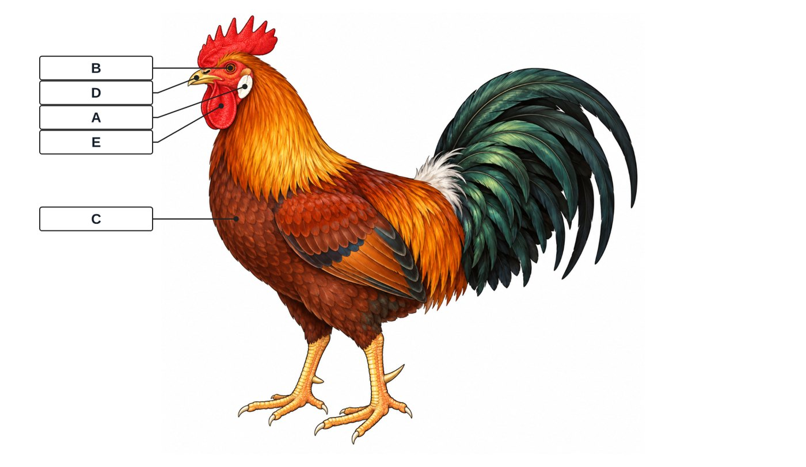
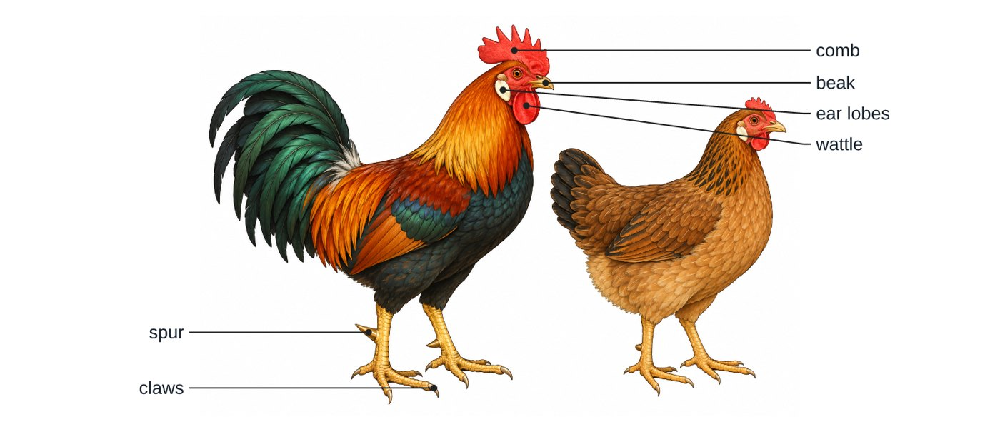

P5 Science · Keeping Poultry. Each drawing was generated once by Codex with no text, then labelled by Ledgerly. It's stored with the position of every part, so every version below comes from the same stored picture without calling the AI again.
13 parts located by Codex and checked by Codex (no corrections needed).

Question: Study the diagram of external parts of a domestic fowl and name the parts marked A, B, C, D and E.
Answer key: {"A":"earlobe","B":"eye","C":"breast","D":"beak","E":"wattle"}
Answer key: {"A":"eye","B":"tail feathers","C":"nape","D":"beak","E":"breast"}

This first run labelled only the cock. From now on comparison pictures label both (e.g. "comb (cock)" and "comb (hen)").